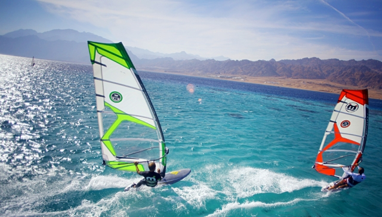

Najlepsze miejsca do uprawiania windsurfingu
Dahab, Egipt
Miasto na półwyspie Synaj. Idealne miejsce, by zacząć naukę windsurfingu, ale też by doskonalić umiejętności. Wspaniała, gwarantowana pogoda i ciepła woda, Bez trudu znajdziesz tu także liczne szkółki windsurfingowe oraz sklepy i wypożyczalnie sprzętu. Pływanie dla poczatkujących odbywa się w akwenie z płaską i płytką wodą, dzięki czemu każdy ma szansę opanować podstawy windsurfingu. Szkółki windsurfingowe i kitesurfingowe zapewniają asekurację motorówek, dzięki której możemy czuć się całkowicie bezpieczni. Dla bardziej zaawansowanych – wave i freestyle na otwartym morzu. Właśnie ze względu na to, iż Dahab jest spotem niesamowicie uniwersalnym, umieszczamy go na szczycie naszej listy. Zwłaszcza, że warunki wietrzne są w Dahabie fantastyczne – statystyki wiatrowe mówią nawet o trzystu wietrznych dniach w roku. Najlepsze statystki spotkamy w Dahabie latem – nawet do 7 stopni w skali Beauforta.
